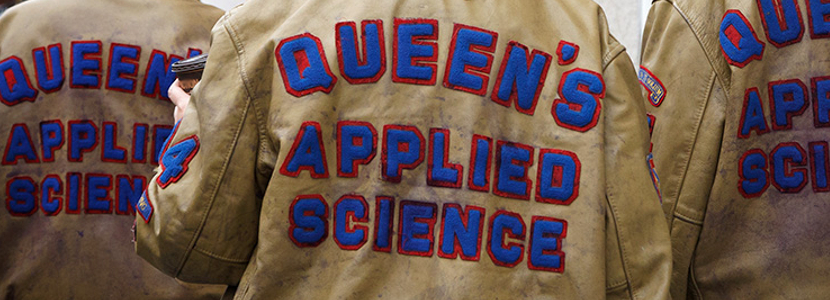
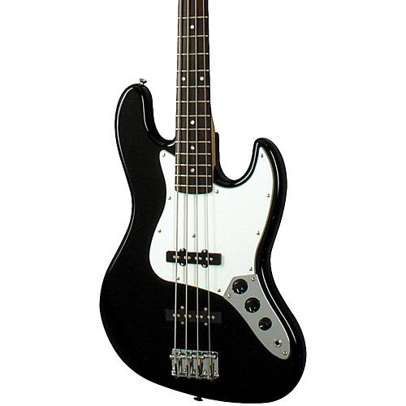
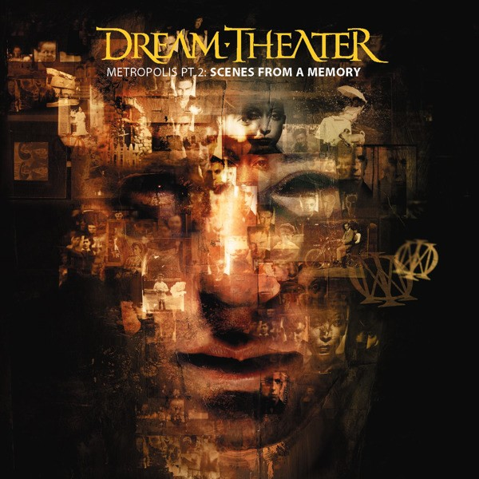
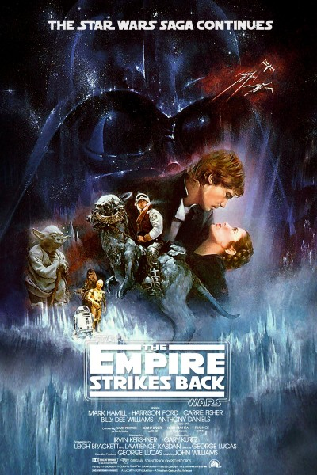
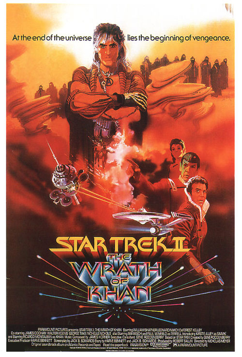

I am an Engineer by training. I went to the finest University in the world, Queen's University, and was in the best faculty there, Applied Science. If you don't believe those are the best, participate in Frosh Week there...the indoctrination is strong.
There is a lot of tradition there, more so than most Candian universities. I'm sure Wiki will have a lot of what those traditions are, but suffice it to say, it's a big unifying factor in the school at many levels. To the left is the year crest for my graduating class, go Sci '97! It was there that I learned the difference between Science and Engineering teaching. In science, they expect you to know everything off the top of your head. In engineering, they know that in the real world, if you don't know something, you'll look it up.
I also had a professor that said "Every time you make a binary decision, you'll make the wrong choice" and sadly that's proven true more often than not. And tangentially, I also wrote for the much more satirical campus paper, Golden Words, during my first year. Being a Queen's Engineer was a lot of work, but a lot of fun and I wouldn't change it for anything. Cha Gheill!

Golden Party Armor slightly purpled up
I also on occasion am a musician, having started playing trombone in grade 7, eventually playing in the local symphony orchestra until I went off to school. Once at school, a friend of mine let me borrow his acoustic six string guitar and I've been dabbling with guitars ever since. I currently have a six string acoustic, six string electric and 12 string acoustic/electric guitar as well as a bass, which is pictured here.
My fingers likely don't move fast enough to really shred it on guitar, but bass is in general a little more my pace and still a lot of fun to play. Unfortunately, as I'll talk about a little lower, I've found a band that I like listening to that has a high level of musical skill so perhaps I'm setting my sights a little high. For now, I'll be content with improving my skills using the amazing XBox 'game' Rocksmith which allows you to plug in a real guitar or bass and learn to play songs.
Eventually, hopefully I'll get good enough to merit using the wonderful instrument below, a six string bass!


This is the cover to Dream Theater's 1999 album, "Metropolis Pt. 2: Scenes from a Memory". It's the first album that I've ever heard that's actually a 'sequel' to another song, in this case, "Metropolis" from the 1992 album "Images and Words". Dream Theater was founded by three students at the Berklee College of Music and their current drummer was a professor at that same school.
So to say this band is musically talented is an understatement. Their guitarist, John Petrucci, is acknowledged as one of the greatest guitarists of all time, and their bass player, John Myung, often matches Petrucci note for note. So far, I've only attempted to play some of the easier guitar parts and pretty much given up on the bass parts since Myung uses a six string bass as pictured above and that's practically impossible to reproduce on a normal bass.
But, I enjoy listening to it, singing and love the intricacy of their work (an album with 8 songs, each of which's key progresses up an octave, time signature changes, 5 songs spread over 5 albums with a common lyrical and musical theme, and more). So I suppose I'd rather fail trying to emulate excellent musicians than be content with easier goals.
Cooking is something that, when I make time for, I enjoy doing. It's like chemistry, but you can eat the results and it works far more frequently. And if I intend to make cookies, I get cookies.
And like most people who use Instagram, I like to occasionally post pictures of food so here are a Brazilian cheese bread, Pão de Queijo, and some chocolate chunk muffins, close to Costco muffin size.
These two examples are the reason why I have three different sizes of muffin tins....
These are the three men who introduced me to the world of cars that are far more expensive than I could imagine ever owning, but they are a fun little fantasy. Plus where else could I find out useful car facts like "Can it drive upside down?", "How easy is it to transport a dead body in the trunk?" and "Should a Porsche be used as an ambulance?" Incredibly useful consumer advice.
Jeremy Clarkson (the taller gray haired one) also taught me the very obvious lesson that if you punch an assistant for making a mistake with your lunch, you'll be fired. But then you and your two mates will get a new show with Amazon and all will be good!
He also taught me that the fastest car in the world isn't a super car or a hyper car or any of those expensive ones, it's a rental car because you don't really care what happens to it. Ah life lessons....Anyways, I'll share a couple of the cars I can't ever afford that I really like, the Pagani Huayra and the Bugatti Veyron.

Star Wars or Star Trek? Okay, that's not really a terribly fair question, but why choose? You can like one and the other plus all sorts of other science fiction or fantasy out there. Empire Strikes Back and Wrath of Khan are probably the two movies I have watched the most in my lifetime. They've taught me that if a girl says she loves you, just answer "I know" and you're gold! (of course, saying it just before your possible death may have something to do with that).
They also taught me that if I go by the book, hours will seem like days. But these are just the tip of the ice berg. There's a rich bounty of science fiction books, movies and television out there that expands the imagination and can inspire all sorts of things. Thank Star Trek for the cell phone in your hand and Star Wars for revolutionizing all sorts of effects. Do androids dream of electric sheep? Is luck a trait in humanity that can be bred? Can you make a movie with so many layers that not even the characters know what's actually real?
Science Fiction: just enough science and imagination to change the world.

And then science-fiction was my gateway into anime. Started with Battle of the Planets (Kagaku Ninja-tai Gatchaman) which I didn't see a lot of, but definitely remembered when the main character was finally reunited with his father just before his father sacrificed himself to save the world. Kind of makes an impact on a young mind.
Then came Robotech, but primarily the Macross part of it. Finally the last push was finding an anime club on campus. Pictured here is a shot from Macross Plus, visually stunning, amazing music amd great story telling. Trying to mimic certain anime drawings is how I discovered I had some drawing ability which led to discovering that I'm somewhat proficient with 3D modeling, which is a passion of mine to this day.
It's one of those things that I can easily lose track of hours and wonder why it's 2 am and why I didn't get to sleep hours ago.
You can't win an MMO. There's just no way. But that's not stopping me from trying. What's the most frequent lie I tell myself? "I'll just turn in this one mission, then I'll stop for the day." Ha ha ha ha ha.
Following Skyrim's massive success, the evil folks at Bethesda asked, "How can we consume even more of our customers time?" and came up with The Elder Scrolls Online: Tamriel Unlimited. And while I enjoyed Skyrim, I keep getting sucked back into ESO.
I mean, sure, there's a lot of ridiculous things in it. People asking you to pick up a book that they could easily get themselves or the idea that the best way to save the world is to kill everyone that doesn't agree with you. Still, that's video game logic!
And every now and then, who doesn't need to blow off some steam by firing arrows into computer generated people or hitting them with swords dozens of times more than would actually be needed if you were in a sword fight. Definitely better than doing that on not so computer generated people.
And finally, what could be more typically 'a guy thing' than sports? So here are my favorite sport teams, the Chicago Bears and Cleveland Indians. Do I have any sort of geographical loyalty to either of these teams? Nope. The best I get with that is somewhat cheering for the Utah Jazz.
Growing up in Canada, firstly I should like hockey, but no. Secondly, my baseball team should be the Toronto Blue Jays (maybe Montreal Expos, now Washington Nationals who I do like) and my NFL team would be the Buffalo Bills who I enjoyed seeing lose 4 straight Super Bowls. No, I like Chicago because they won the Super Bowl just before I started watching football
and I like Cleveland because I wanted a team with no expectations so no disappointments (then they got better and came oh so close). And my favorite sport's fact is that Nolan Ryan threw one of his seven no-hitters on the day I was born, so yay Nolan Ryan!